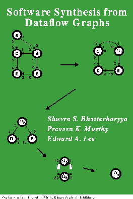

|
 |
Software Synthesis from Dataflow Graphs,byS. S. Bhattacharyya, P. K. Murthy, and E. A. Lee, Kluwer Academic Press, Norwell, MA, 1996. Ordering information. |
This book tackles the problem of generating efficient software implementations from applications specified as synchronous dataflow graphs for programmable digital signal processors (DSPs) used in embedded real-time systems. The advent of high-speed graphics workstations has made feasible the use of graphical block diagram programming environments by designers of signal processing systems. A particular subset of dataflow, called Synchronous Dataflow (SDF), has proven efficient for representing a wide class of unirate and multirate signal processing algorithms, and has been used as the basis for numerous DSP block diagram based programming environments such as the Signal Processing WorkSystem from Cadence design systems, COSSAP from Synopsys (both commercial tools), and the Ptolemy environment from the University of California at Berkeley.
A key property of the SDF model is that static schedules can be determined at compile time. This removes the overhead of dynamic scheduling and is thus useful for real-time DSP programs where throughput requirements are often severe. Another constraint that programmable DSPs for embedded systems have is the limited amount of on-chip memory. Off-chip memory is not only expensive but is also slower and increases the power consumption of the system; hence, it is imperative that programs fit in the on-chip memory whenever possible.
This book reviews the state-of-the-art in constructing static, memory-optimal schedules for programs expressed as SDF graphs. Code size reduction is obtained by the careful organization of loops in the target code. Data buffering is optimized by constructing the loop hierarchy in provably optimal ways for many classes of SDF graphs. The central result is a uniprocessor scheduling framework that provably synthesizes the most compact looping structures, called single appearance schedules, for a certain class of SDF graphs. In addition, algorithms and heuristics are presented that generate single appearance schedules optimized for data buffering usage. Numerous practical examples and extensive experimental data is provided to illustrate the efficacy of these techniques.
Key results and contributions of the book
This book studies the problem of generating software implementations that are both program and buffer-memory optimal for programmable DSPs starting from applications expressed as synchronous dataflow graphs. The main results are as follows: